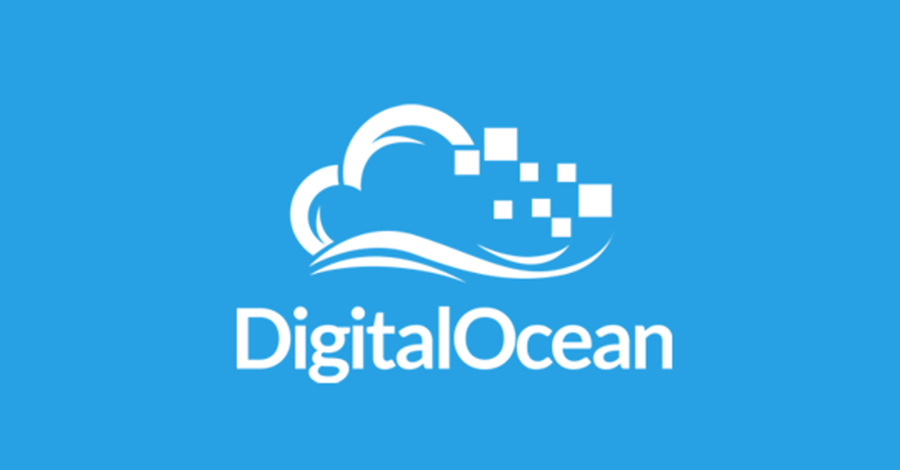

Você conhece a Digital Ocean?

A Digital Ocean é uma empresa especializada que provê uma infraestrutura de hospedagem cloud focada em desenvolvedores de software.
Em apenas 55 segundos você pode criar um servidor cloud.
Quais são as configurações?
A configuração inicial parte de uma máquina de 512mb de memória, 1 Core de processamento com 20GG SSD e limite de banda de 1TB.
Existem outras configurações com valores de 10$, 20$ até 640$. As configurações mais caras, nomeadas de "High Volume Plans" são adequadas para aplicações de alto nível de processamento.
Além das configurações você pode escolher o local onde ficará hospedado (New York, London, São Francisco, Amsterdam e e outros).
É possível rodar uma aplicação com a configuração inicial?
Claro! As máquinas virtuais podem ser configuradas de acordo com a sua preferência, existem diversas imagens de disco disponibilizadas, onde é possível escolher sua distribuição de sistema operacional Linux favorita, algumas imagens possuem aplicações previamente instaladas como wordpress, mysql, mongodb, nginx entre outras aplicações. Eu preferi uma distribuição sem nenhum pacote previamente instalado, desta maneira posso decidir quais pacotes serão necessários para minha aplicação.
Este blog utiliza a distribuição Ubuntu Server 14.x em um hardware de configuração inicial (512mb de memoria e 1 Core de processamento).
Otimizações?
Por tratar-se de um sistema operacional Linux você pode personalizar sua infraestrutura. As possíveis alterações partem de configurações no http server até configurações de memória swap ou implementação de um proxy reverso.
Desvantagens e limitações ?
Até o momento a hospedagem atende em todos os requisitos, por 5$ mensais até mesmo surpreende. A desvantagem é que não existem data centers no Brasil.
Uma limitação seria a disponibilização de servidores cloud Windows, a Digital Ocean trabalha somente com distribuições Linux. Apesar de ser um limitação, já testei máquinas windows com 700mb no Azure e não tive um bom desempenho.
Vantagens
- A performance da Digital Ocean comparando planos do mesmo custo 5$ dispensa elogios.
- A comunidade Digital Ocean é muito dedicada em conteúdos e certamente você encontrará artigos para configuração da sua aplicação.
- HD SSD realmente é um diferencial que auxilia na performance
Recomendações
Obrigado
Até a próxima!!!